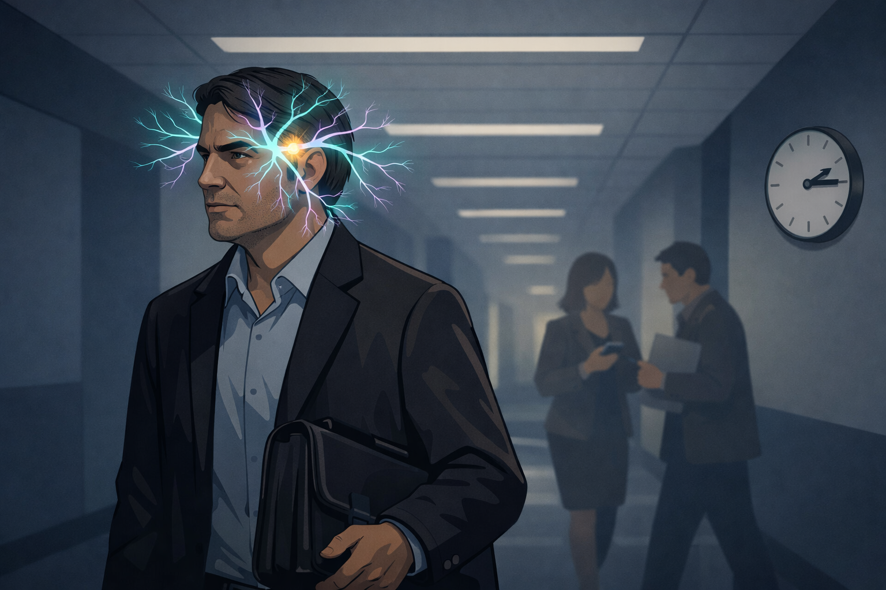

By Rustam Iuldashov
30 years lived experience with migraine · Sources: 13 peer-reviewed references including Lancet Neurology, Pain and Therapy (GBD 2021), The Journal of Headache and Pain, Frontiers in Neurology · Last updated: March 25, 2026
Medical Note: This content is based on peer-reviewed research from Lancet Neurology, Pain and Therapy, The Journal of Headache and Pain, Frontiers in Neurology, Current Pain and Headache Reports, and Neurology. The author is a patient advocate, not a licensed medical professional. Always consult your healthcare provider for medical concerns.
The Lie I Carried for Years
The doctor didn’t say anything cruel. He just paused — a small recalibration, furniture being moved — and offered: “You know this is more of a women’s thing, right?”
I was in my early twenties. I nodded. And somewhere in that nod, I agreed to make my own pain smaller.
I’ve lived with migraine for 30 years. I’m a man. These two facts have never been in conflict — not biologically, not neurologically, not in any way that matters. But the world spent decades insisting, quietly and sometimes loudly, that they might be. That I was borrowing something. That the attacks shutting me down in a dark room were somehow less legitimate than they would have been in a different body.
This article is about why that perception exists, why it causes real harm, and what the science now says with increasing clarity.
Migraine doesn’t care what’s in your chromosomes. It never did.
The Number Nobody Mentions
Migraine affects approximately 1 in 6 women — and 1 in 15 men worldwide.[1] That gap is real. It matters scientifically. It drove decades of research focused primarily on women, which left men in a clinical shadow long enough that we started believing we didn’t belong in the conversation.
But here is what gets lost in that statistic: 1 in 15 is not a rounding error. It’s hundreds of millions of people.
The Global Burden of Disease Study 2021 — the most comprehensive epidemiological analysis ever conducted on migraine — found that global prevalence increased by 58% between 1990 and 2021.[2] Among male individuals, the rate of increase was four to five times faster than among females. Men aren’t catching up to women in migraine. They’re accelerating toward a burden the medical system never prepared for.
A 2025 analysis of GBD data specifically tracking males aged 10–59 found a telling pattern: incidence peaks in adolescence, between ages 10 and 14, while prevalence and disability peak in the middle-aged group, 30 to 44.[3] Those are working years. Career years. The years when a man is most likely to be told — or to tell himself — that pain is not an acceptable reason to stop.
And so many don’t stop. They push through. They don’t name it. They disappear into dark rooms and come out saying they’re fine.
Why Men Stay Silent
The 2023 EMHA Stigma Survey, conducted across 17 European countries with 4,210 respondents, found that people with migraine wait an average of five years for a diagnosis — then an additional three years before receiving appropriate care.[4] For men, the clock often doesn’t even start. The barriers come before the waiting room.
Researchers tracking the 30-year global burden named the mechanism directly: traditional sex and gender roles, combined with higher pain tolerance expectations, may lead to underdiagnosis and undertreatment in men with migraine.[2] In plain language: men are taught to endure. Asking for help feels like failing a test nobody handed you but everyone expects you to pass.
The American Migraine Foundation states it without softening: for the millions of men who live with migraine, there is often pressure to push through or struggle in silence. The myth that migraine is a woman’s disease prevents many men from recognizing their own symptoms for what they are.[5]
I know this from the inside. For years I called my attacks “bad headaches” — to doctors, to colleagues, to myself. The word migraine felt borrowed. Like I was reaching into someone else’s medicine cabinet without permission.
And the disease itself makes this worse. Migraine is invisible. There’s no blood test, no scan, no marker you can point to. Diagnosis is built entirely from symptoms — which means it depends entirely on the patient’s willingness to report them fully and honestly. When you’ve been conditioned to minimize pain, you become a poor historian of your own suffering. You underreport. Doctors under-suspect. The gap between disease burden and clinical recognition stays wide, year after year, attack after attack.
Structural stigma closes the trap. Research confirms that stigma doesn’t just follow underdiagnosis — it actively causes it. When patients fear being disbelieved, they describe their symptoms less vividly. When physicians carry implicit assumptions about who “gets” migraine, they ask fewer follow-up questions.[8, 12] The bias runs in both directions, and men sit at the intersection of both.
When the Symptoms Don’t Fit the Textbook
There’s another layer to the underdiagnosis problem — and it’s not about willingness. It’s about biology.
The International Classification of Headache Disorders (ICHD-3) describes migraine as unilateral, pulsating pain, worsened by movement, accompanied by nausea, photophobia, and phonophobia. That diagnostic checklist was constructed largely from data skewed toward women. It describes female migraine well. It describes male migraine imperfectly.
A 2025 comprehensive narrative review published in The Journal of Headache and Pain found that men with migraine often exhibit atypical symptoms compared to the ICHD-3 criteria and are less likely to report common associated symptoms — nausea, light sensitivity, sound sensitivity.[6] Male attacks tend to be shorter. The pain character may differ. The whole clinical picture can look enough like “a severe headache” that both patient and physician miss it — not from negligence, but because the map was drawn for someone else.
This diagnostic confusion is further complicated by another neurological condition that actually does skew heavily male: cluster headache. Cluster affects men disproportionately — excruciating periorbital pain, tearing, agitation, attacks that last 15 minutes to 3 hours and strike in cyclical patterns. It is frequently misdiagnosed as migraine and vice versa.[7] Men navigating that diagnostic fog can spend years on wrong treatments for the wrong condition while the right one goes unnamed.
The system was not built to find them. And so, it often doesn’t.
⚠️ When to Seek Emergency Care
Headache is not always migraine. Seek emergency medical attention immediately if you experience:
- A sudden, severe headache that feels like “the worst headache of your life” (thunderclap headache)
- Headache with fever, stiff neck, confusion, or rash
- Headache following a head injury
- New headache with vision loss, weakness, numbness, or difficulty speaking
- Headache that is rapidly worsening over hours or days
These symptoms may indicate a serious neurological condition requiring urgent evaluation. A first-ever severe headache always warrants medical assessment, even if migraine is later confirmed. Do not use this article to self-diagnose or delay care.
What the Biology Actually Says
Why do fewer men get migraine? The honest answer: we don’t fully know. The research has only recently begun to ask the right questions about the right people.
What we do know involves hormones — but not in the simple way the “women’s disease” narrative implies.
Estrogen fluctuations are a well-established migraine trigger, which partly explains the higher prevalence in women during reproductive years.[8] In men, the hormonal environment is more stable, which may offer some protection. But “some protection” is not “immunity,” and the biology of male migraine turns out to be more nuanced than a simple hormone-deficiency story.
A 2025 matched-cohort study at the Charité headache center in Berlin examined 60 men with episodic migraine alongside 60 matched healthy male controls.[9] Men with migraine had lower progesterone levels and a higher estradiol-to-progesterone ratio. Testosterone, notably, did not differ significantly between groups. The finding challenges the instinct to explain male migraine through a single hormonal lens.
The relationship between androgens and migraine is not straightforward — and earlier research has suggested that men with migraine more frequently report symptoms of androgen deficiency even when their testosterone levels appear normal.[10]
CGRP — the neuropeptide at the center of modern migraine biology and the target of the newest preventive therapies — also behaves differently across sexes. Animal models show sex-specific CGRP expression in trigeminal pathways.[6] The clinical implications for male-specific treatment are still being worked out.
The important point is this: male migraine is not simply female migraine with fewer hormones. It’s a distinct phenotype that has spent decades being understudied, misclassified, and left in the margins of a literature that wasn’t looking for it. That is beginning to change. Slowly. Not fast enough.

The Cost of Staying Hidden
When men don’t seek care, the consequences are not abstract.
The OVERCOME study found that men with migraine were significantly less likely to consult a headache specialist or use prescription acute medications compared to women.[11] Undertreated attacks. More lost workdays. More nights on the floor of a dark room, without a name for what’s happening, without a plan.
Migraine-related stigma compounds this directly. A 2024 analysis of the OVERCOME dataset found that internalized stigma independently predicted greater disability and lower quality of life — above and beyond attack frequency.[12] It’s not just the pain that disables. It’s the belief that you shouldn’t have it.
I did this. For years, I added shame to the pain. I made migraine harder than it needed to be by believing, on some level, that it wasn’t entirely mine to claim.
That belief cost me time. It cost me attacks I could have shortened. It cost me treatments I could have started sooner. Shame is not neutral. It has a clinical price.
A Letter to the Man in the Dark Room
If you’re reading this in the aftermath of an attack — when your head is quiet enough to look at a screen, when the nausea has passed, when you’ve told everyone you’re fine — I want to say something directly.
This is real. What happened to your head is real. It has a name. It has biological mechanisms involving the trigeminal nerve, CGRP, cortical spreading depression, the brainstem. It is the second most disabling neurological condition on the planet.[13] It is not a personality flaw. It is not weakness. It is not borrowed from someone else’s experience.
You are 1 in 15. There are hundreds of millions of men in that number. You are not alone in the dark.
Go to a doctor. Say the word migraine. Bring a headache diary if it helps. Ask about triptans. Ask about CGRP monoclonal antibodies. Ask about preventive treatment. These are not women’s medications. They are migraine medications — and they can work for you.
Migraine doesn’t care about your gender. Neither should your treatment.
Key Takeaways
- Migraine affects approximately 1 in 15 men globally — hundreds of millions of people.[1, 2]
- The male migraine burden is growing 4–5× faster than in women, per GBD 2021 data.[2]
- Men with migraine are less likely to seek care due to gender norms, stoicism, and internalized stigma.[2, 4, 5]
- Male migraine often presents atypically — shorter attacks, fewer associated symptoms — contributing to underdiagnosis.[6]
- The hormonal biology of male migraine is complex and emerging; testosterone’s role is not straightforward.[9, 10]
- Internalized stigma independently worsens disability — getting a diagnosis and naming it changes outcomes.[12]
- Effective treatments exist; men deserve the same access, advocacy, and care as any migraine patient.[11]
⚕️ Important Medical Disclaimer
This article is for informational and educational purposes only and does not constitute medical advice, diagnosis, or treatment. The author, Rustam Iuldashov, is not a licensed physician, neurologist, or healthcare professional. He is a patient advocate with 30 years of personal experience living with chronic migraine.
All clinical claims in this article are sourced from peer-reviewed research published in indexed medical journals. Study designs and sample sizes are noted where applicable.
The epidemiological data presented here reflects global population studies and may not apply to your individual situation. Migraine diagnosis and treatment should always be determined by a qualified healthcare provider.
If you are experiencing recurring severe headaches, please seek evaluation from a licensed clinician. Do not delay seeking care based on gender assumptions — neither yours nor anyone else’s. This content was last reviewed for accuracy on March 25, 2026.
References
- Vetvik KG, MacGregor EA. “Sex differences in the epidemiology, clinical features, and pathophysiology of migraine.” Lancet Neurology, 16(1):76–87 (2017). doi:10.1016/S1474-4422(16)30293-9. Study design: Narrative review.
- Dong L, Dong W, Jin Y, et al. “The Global Burden of Migraine: A 30-Year Trend Review and Future Projections by Age, Sex, Country, and Region.” Pain and Therapy, 14(1):297–315 (2025). doi:10.1007/s40122-024-00690-7. Study design: GBD systematic analysis. n=global population data 1990–2021.
- “Global, regional, and national burdens and trends of migraine among males aged 10–59 years from 1990 to 2021: insights from the Global Burden of Disease Study 2021.” Frontiers in Neurology (2025). doi:10.3389/fneur.2025. Study design: GBD cohort analysis. n=global male population.
- European Migraine & Headache Alliance. Stigma Survey 2023. Conducted April 27–June 30, 2023, 17 European countries. n=4,210. emhalliance.org.
- American Migraine Foundation. “Migraine in Men.” Resource Library, 2024. americanmigrainefoundation.org.
- Ornello R, et al. “Migraine in men.” The Journal of Headache and Pain, 25 (2025). doi:10.1186/s10194-024-01936-7. Study design: Narrative review. Literature search March–October 2024.
- Freeman E, Adair M, et al. “Patient-identified burden and unmet needs in patients with cluster headache: An evidence-based qualitative literature review.” Cephalalgia, 42 (2022). doi:10.1177/25158163221096866. Study design: Qualitative systematic review.
- Ahmad SR, Rosendale N. “Sex and gender considerations in episodic migraine.” Current Pain and Headache Reports, 26 (2022). doi:10.1007/s11916-022-01052-8. Study design: Narrative review.
- Storch E, et al. “Sex hormone profiles in men with migraine: a cross-sectional, matched cohort study.” Frontiers in Neurology (2025). doi:10.3389/fneur.2025.1648017. Study design: Cross-sectional matched cohort. n=120 (60 migraine, 60 controls).
- van Oosterhout WPJ, et al. “Clinical symptoms of androgen deficiency in men with migraine or cluster headache.” Cephalalgia (2021). PMC8525012. Study design: Cross-sectional cohort.
- Lipton RB, et al. “Diagnosis, consultation, treatment, and impact of migraine in the US: results of the OVERCOME (US) study.” Headache, 62:122–140 (2022). doi:10.1111/head.14450. Study design: Cross-sectional survey. n=large US population sample.
- Shapiro RE, Nicholson RA, Seng EK, et al. “Migraine-related stigma and its relationship to disability, interictal burden, and quality of life: results of the OVERCOME (US) Study.” Neurology, 102:e208074 (2024). doi:10.1212/WNL.0000000000208074. Study design: Cross-sectional. n=large US population sample.
- GBD 2021 Nervous System Disorders Collaborators. “Global, regional, and national burden of disorders affecting the nervous system, 1990–2021.” Lancet Neurology, 23:344–381 (2024). doi:10.1016/S1474-4422(24)00038-3. Study design: Systematic GBD analysis. n=204 countries.

How We Create Content
- Peer-reviewed sources only. This article cites Lancet Neurology, Pain and Therapy, The Journal of Headache and Pain, Frontiers in Neurology, Current Pain and Headache Reports, Headache, Neurology, and Cephalalgia.
- Study transparency. Study design and sample sizes noted for all clinical references.
- Source verification. All claims backed by numbered references with DOI links.
- Experience + Science. 30 years personal migraine experience combined with peer-reviewed evidence.
- Regular updates. Articles reviewed when significant new research emerges.
- No conflicts of interest. No pharmaceutical funding. No supplement partnerships. No sponsored content.
Track Your Migraine. Own Your Story.
Migraine Companion helps you log attacks, spot patterns, and understand your triggers — built by someone who has lived with migraine for 30 years. The data you collect becomes the evidence you bring to your doctor.
Last reviewed: March 2026
Next scheduled review: September 2026